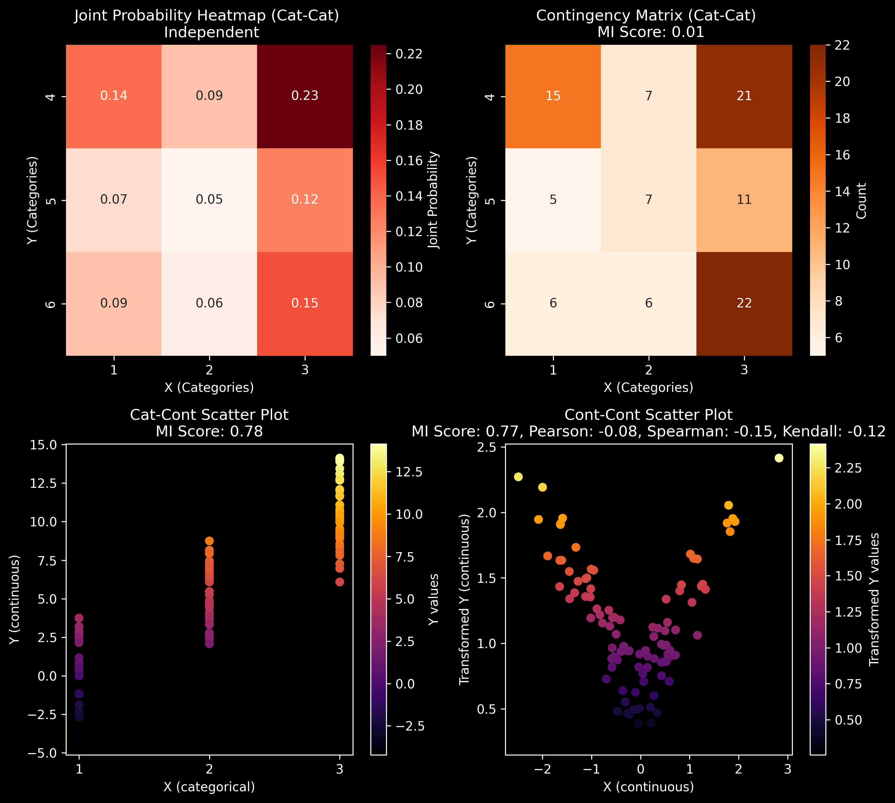

Mutual Information (MI)#
Definition: Measures the dependence between two random variables, quantifying how much knowing one reduces uncertainty about the other.
Formula:
\[
I(X; Y) = \sum_{x \in X} \sum_{y \in Y} p(x, y) \log \left( \frac{p(x, y)}{p(x) p(y)} \right)
\]
Properties:
\(I(X; Y) \geq 0\)
Symmetric: \(I(X; Y) = I(Y; X)\)
Additive: \(I(X; Y, Z) = I(X; Y) + I(X; Z | Y)\)
Interpretation:
\(I(X; Y) = 0\): \(X\) and \(Y\) are independent.
Higher \(I(X; Y)\) means more shared information.
Applications: Feature selection, image registration, and signal processing.
# Full-code and Notes at GitHub
import numpy as np
import pandas as pd
import matplotlib.pyplot as plt
from itertools import product
from sklearn.feature_selection import (
mutual_info_classif, mutual_info_regression
)
from scipy.stats import pearsonr, spearmanr, kendalltau
import seaborn as sns
np.random.seed(47)
plt.style.use('dark_background')
# --- Cat-Cat: Zero Mutual Information ---
categories_X = [1, 2, 3]
categories_Y = [4, 5, 6]
p_X = [0.3, 0.2, 0.5]
p_Y = [0.45, 0.25, 0.3]
X_cat = np.random.choice(categories_X, size=100, p=p_X)
Y_cat = np.random.choice(categories_Y, size=100, p=p_Y)
contingency_matrix = pd.crosstab(X_cat, Y_cat)
contingency_matrix
| col_0 | 4 | 5 | 6 |
|---|---|---|---|
| row_0 | |||
| 1 | 15 | 5 | 6 |
| 2 | 7 | 7 | 6 |
| 3 | 21 | 11 | 22 |
fig, axs = plt.subplots(2, 2, figsize=(10, 9), dpi=300)
# Plot 1: Joint Probability Density (Cat-Cat)
sns.heatmap(
np.outer(np.array(p_X), np.array(p_Y)).T,
annot=True, cmap='Reds', fmt='.2f',
cbar_kws={'label': 'Joint Probability'},
ax=axs[0, 0]
)
axs[0, 0].set_title(
"Joint Probability Heatmap (Cat-Cat) \n Independent"
)
axs[0, 0].set_xlabel("X (Categories)")
axs[0, 0].set_ylabel("Y (Categories)")
axs[0, 0].set_xticklabels([1, 2, 3])
axs[0, 0].set_yticklabels([4, 5, 6])
# MI Score for Cat-Cat
mi_score_cat_cat = mutual_info_classif(
np.array(Y_cat).reshape(-1, 1), X_cat
)[0]
# Plot 2: Contingency Matrix of the Observed Data (Cat-Cat)
sns.heatmap(
contingency_matrix.T, annot=True, cmap='Oranges',
fmt='d', cbar_kws={'label': 'Count'},
ax=axs[0, 1]
)
axs[0, 1].set_title(
f"Contingency Matrix (Cat-Cat) \n MI Score: {mi_score_cat_cat:.2f}"
)
axs[0, 1].set_xlabel("X (Categories)")
axs[0, 1].set_ylabel("Y (Categories)")
# --- Cat-Cont: Non-zero Mutual Information ---
X = np.random.choice(categories_X, size=100,
p=[0.3, 0.4, 0.3])
means = {1: 0, 2: 5, 3: 10}
std_dev = 2
Y = np.array([np.random.normal(loc=means[x], scale=std_dev) for x in X])
# MI Score for Cat-Cont
mi_score_cat_cont = mutual_info_classif(Y.reshape(-1, 1), X)[0]
# Plot 3: Cat-Cont Scatter Plot
scatter_cat_cont = axs[1, 0].scatter(X, Y, c=Y, cmap='inferno')
axs[1, 0].set_xlabel("X (categorical)")
axs[1, 0].set_ylabel("Y (continuous)")
axs[1, 0].set_title(
f"Cat-Cont Scatter Plot\nMI Score: {mi_score_cat_cont:.2f}"
)
axs[1, 0].set_xticks([1, 2, 3])
cbar_cat_cont = plt.colorbar(scatter_cat_cont, ax=axs[1, 0])
cbar_cat_cont.set_label("Y values", labelpad=2)
# --- Cont-Cont: Non-zero Information with sqrt Transformation ---
X_cont = np.random.normal(loc=0, scale=1, size=100)
Y_cont = 2 * X_cont + np.random.normal(loc=0, scale=0.5, size=100)
Y_cont_transformed = np.sqrt(np.abs(Y_cont))
# MI Score for Cont-Cont
mi_score_cont_cont = mutual_info_regression(
X_cont.reshape(-1, 1), Y_cont_transformed
)[0]
# Calculate Pearson, Spearman, Kendall Tau-b correlations
pearson_corr, _ = pearsonr(X_cont, Y_cont_transformed)
spearman_corr, _ = spearmanr(X_cont, Y_cont_transformed)
kendall_corr, _ = kendalltau(X_cont, Y_cont_transformed)
# Plot 4: Cont-Cont Scatter Plot
scatter_cont_cont = axs[1, 1].scatter(X_cont, Y_cont_transformed,
c=Y_cont_transformed, cmap='inferno')
axs[1, 1].set_xlabel("X (continuous)")
axs[1, 1].set_ylabel("Transformed Y (continuous)")
axs[1, 1].set_title(
f"Cont-Cont Scatter Plot\nMI Score: {mi_score_cont_cont:.2f}, "
f"Pearson: {pearson_corr:.2f}, Spearman: {spearman_corr:.2f}, "
f"Kendall: {kendall_corr:.2f}"
)
cbar_cont_cont = plt.colorbar(scatter_cont_cont, ax=axs[1, 1])
cbar_cont_cont.set_label("Transformed Y values", labelpad=5)
plt.tight_layout()
plt.show()
